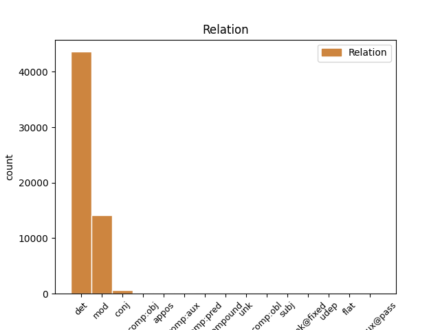
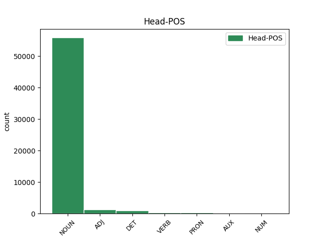
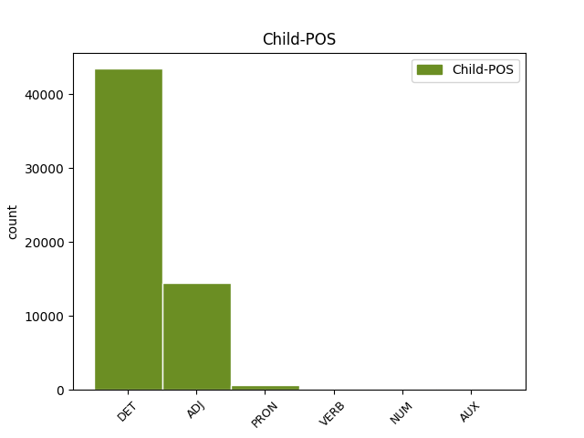

Distribution of features within this leaf



Agreement Rules sorted by frequency.
When the dependent token is None
1 Él _ _ _ _ 0 _ _ _
2 llega _ _ _ _ 0 _ _ _
3 a _ _ _ _ 0 _ _ _
4 tirar _ _ _ _ 0 _ _ _
5 la _ _ _ _ 0 _ _ _
6 sobre _ _ _ _ 0 _ _ _
7 la _ _ _ _ 0 _ _ _
8 cama _ _ _ _ 0 _ _ _
9 y _ _ _ _ 0 _ _ _
10 le _ _ _ _ 0 _ _ _
11 toca _ _ _ _ 0 _ _ _
12 la _ _ _ _ 0 _ _ _
13 cara _ _ _ _ 0 _ _ _
14 con _ _ _ _ 0 _ _ _
15 la el DET DET Definite=Def|Gender=Fem|Number=Sing|PronType=Art 16 det _ _
16 mano mano NOUN NOUN Gender=Fem|Number=Sing 0 _ _ _
17 . _ _ _ _ 0 _ _ _
When the dependent token is None
1 Conviene _ _ _ _ 0 _ _ _
2 que _ _ _ _ 0 _ _ _
3 ahora _ _ _ _ 0 _ _ _
4 , _ _ _ _ 0 _ _ _
5 en _ _ _ _ 0 _ _ _
6 plena _ _ _ _ 0 _ _ _
7 apoteosis _ _ _ _ 0 _ _ _
8 de _ _ _ _ 0 _ _ _
9 pre-presidencia _ _ _ _ 0 _ _ _
10 ( _ _ _ _ 0 _ _ _
11 presidiremos _ _ _ _ 0 _ _ _
12 la _ _ _ _ 0 _ _ _
13 Unión _ _ _ _ 0 _ _ _
14 Europea _ _ _ _ 0 _ _ _
15 dentro _ _ _ _ 0 _ _ _
16 de _ _ _ _ 0 _ _ _
17 unos _ _ _ _ 0 _ _ _
18 meses _ _ _ _ 0 _ _ _
19 : _ _ _ _ 0 _ _ _
20 rogativas _ _ _ _ 0 _ _ _
21 y _ _ _ _ 0 _ _ _
22 festejos _ _ _ _ 0 _ _ _
23 son _ _ _ _ 0 _ _ _
24 de _ _ _ _ 0 _ _ _
25 rigor _ _ _ _ 0 _ _ _
26 ) _ _ _ _ 0 _ _ _
27 reflexionemos _ _ _ _ 0 _ _ _
28 críticamente _ _ _ _ 0 _ _ _
29 y _ _ _ _ 0 _ _ _
30 nos _ _ _ _ 0 _ _ _
31 hagamos _ _ _ _ 0 _ _ _
32 un _ _ _ _ 0 _ _ _
33 lifting lifting NOUN NOUN Gender=Masc|Number=Sing 0 _ _ _
34 metodológico metodológico ADJ ADJ Gender=Masc|Number=Sing 33 mod _ SpaceAfter=No
35 . _ _ _ _ 0 _ _ _
When the dependent token is None
1 El _ _ _ _ 0 _ _ _
2 Valencia _ _ _ _ 0 _ _ _
3 mantiene _ _ _ _ 0 _ _ _
4 intacta _ _ _ _ 0 _ _ _
5 su _ _ _ _ 0 _ _ _
6 maldición _ _ _ _ 0 _ _ _
7 ante _ _ _ _ 0 _ _ _
8 los _ _ _ _ 0 _ _ _
9 equipos _ _ _ _ 0 _ _ _
10 italianos _ _ _ _ 0 _ _ _
11 , _ _ _ _ 0 _ _ _
12 en _ _ _ _ 0 _ _ _
13 cuyo cuyo PRON PRON Gender=Masc|Number=Sing|Poss=Yes|PronType=Int,Rel 14 mod _ _
14 territorio territorio NOUN NOUN Gender=Masc|Number=Sing 0 _ _ _
15 nunca _ _ _ _ 0 _ _ _
16 ha _ _ _ _ 0 _ _ _
17 podido _ _ _ _ 0 _ _ _
18 ganar _ _ _ _ 0 _ _ _
19 un _ _ _ _ 0 _ _ _
20 partido _ _ _ _ 0 _ _ _
21 . _ _ _ _ 0 _ _ _
When the dependent token is None
1 El _ _ _ _ 0 _ _ _
2 pacto _ _ _ _ 0 _ _ _
3 se _ _ _ _ 0 _ _ _
4 firmó _ _ _ _ 0 _ _ _
5 cuando _ _ _ _ 0 _ _ _
6 Josep _ _ _ _ 0 _ _ _
7 Piqué _ _ _ _ 0 _ _ _
8 , _ _ _ _ 0 _ _ _
9 ex _ _ _ _ 0 _ _ _
10 presidente _ _ _ _ 0 _ _ _
11 de _ _ _ _ 0 _ _ _
12 Ercros _ _ _ _ 0 _ _ _
13 , _ _ _ _ 0 _ _ _
14 ya _ _ _ _ 0 _ _ _
15 era _ _ _ _ 0 _ _ _
16 ministro _ _ _ _ 0 _ _ _
17 y _ _ _ _ 0 _ _ _
18 ha _ _ _ _ 0 _ _ _
19 sido ser AUX AUX Gender=Masc|Number=Sing|Tense=Past|VerbForm=Part 0 _ _ _
20 calificado calificar VERB VERB Gender=Masc|Number=Sing|Tense=Past|VerbForm=Part 19 comp:aux _ _
21 de _ _ _ _ 0 _ _ _
22 trato _ _ _ _ 0 _ _ _
23 de _ _ _ _ 0 _ _ _
24 favor _ _ _ _ 0 _ _ _
25 por _ _ _ _ 0 _ _ _
26 la _ _ _ _ 0 _ _ _
27 oposición _ _ _ _ 0 _ _ _
28 parlamentaria _ _ _ _ 0 _ _ _
29 . _ _ _ _ 0 _ _ _
When the dependent token is None
1 Representaron _ _ _ _ 0 _ _ _
2 dos _ _ _ _ 0 _ _ _
3 obras obra NOUN NOUN Gender=Fem|Number=Plur 0 _ _ _
4 , _ _ _ _ 0 _ _ _
5 ambas ambos NUM NUM Gender=Fem|Number=Plur|NumType=Card 3 appos _ _
6 en _ _ _ _ 0 _ _ _
7 un _ _ _ _ 0 _ _ _
8 mes _ _ _ _ 0 _ _ _
9 de _ _ _ _ 0 _ _ _
10 octubre _ _ _ _ 0 _ _ _
11 : _ _ _ _ 0 _ _ _
12 El _ _ _ _ 0 _ _ _
13 burlador _ _ _ _ 0 _ _ _
14 de _ _ _ _ 0 _ _ _
15 Sevilla _ _ _ _ 0 _ _ _
16 , _ _ _ _ 0 _ _ _
17 de _ _ _ _ 0 _ _ _
18 Tirso _ _ _ _ 0 _ _ _
19 de _ _ _ _ 0 _ _ _
20 Molina _ _ _ _ 0 _ _ _
21 , _ _ _ _ 0 _ _ _
22 y _ _ _ _ 0 _ _ _
23 El _ _ _ _ 0 _ _ _
24 rey _ _ _ _ 0 _ _ _
25 Lear _ _ _ _ 0 _ _ _
26 , _ _ _ _ 0 _ _ _
27 de _ _ _ _ 0 _ _ _
28 Shakespeare _ _ _ _ 0 _ _ _
29 , _ _ _ _ 0 _ _ _
30 con _ _ _ _ 0 _ _ _
31 escenografía _ _ _ _ 0 _ _ _
32 de _ _ _ _ 0 _ _ _
33 Paco _ _ _ _ 0 _ _ _
34 Nieva _ _ _ _ 0 _ _ _
35 . _ _ _ _ 0 _ _ _
When the dependent token is None
1 La _ _ _ _ 0 _ _ _
2 situación _ _ _ _ 0 _ _ _
3 es _ _ _ _ 0 _ _ _
4 equiparable _ _ _ _ 0 _ _ _
5 a _ _ _ _ 0 _ _ _
6 lo _ _ _ _ 0 _ _ _
7 ocurrido _ _ _ _ 0 _ _ _
8 en _ _ _ _ 0 _ _ _
9 otros _ _ _ _ 0 _ _ _
10 países país NOUN NOUN Gender=Masc|Number=Plur 0 _ _ _
11 europeos _ _ _ _ 0 _ _ _
12 , _ _ _ _ 0 _ _ _
13 incluido _ _ _ _ 0 _ _ _
14 España _ _ _ _ 0 _ _ _
15 , _ _ _ _ 0 _ _ _
16 en _ _ _ _ 0 _ _ _
17 que _ _ _ _ 0 _ _ _
18 ha _ _ _ _ 0 _ _ _
19 habido haber AUX AUX Gender=Masc|Number=Sing|Tense=Past|VerbForm=Part 10 mod _ _
20 sanciones _ _ _ _ 0 _ _ _
21 contra _ _ _ _ 0 _ _ _
22 petroleras _ _ _ _ 0 _ _ _
23 por _ _ _ _ 0 _ _ _
24 restringir _ _ _ _ 0 _ _ _
25 la _ _ _ _ 0 _ _ _
26 competencia _ _ _ _ 0 _ _ _
27 . _ _ _ _ 0 _ _ _
Disagree Examples:
1 Por _ _ _ _ 0 _ _ _
2 su _ _ _ _ 0 _ _ _
3 parte _ _ _ _ 0 _ _ _
4 , _ _ _ _ 0 _ _ _
5 la _ _ _ _ 0 _ _ _
6 ministra _ _ _ _ 0 _ _ _
7 Anna _ _ _ _ 0 _ _ _
8 Birulés _ _ _ _ 0 _ _ _
9 animó _ _ _ _ 0 _ _ _
10 a _ _ _ _ 0 _ _ _
11 las el DET DET Definite=Def|Gender=Fem|Number=Plur|PronType=Art 12 det _ _
12 pymes pyme NOUN NOUN Gender=Masc|Number=Plur 0 _ _ _
13 a _ _ _ _ 0 _ _ _
14 invertir _ _ _ _ 0 _ _ _
15 en _ _ _ _ 0 _ _ _
16 Investigación _ _ _ _ 0 _ _ _
17 y _ _ _ _ 0 _ _ _
18 Desarrollo _ _ _ _ 0 _ _ _
19 y _ _ _ _ 0 _ _ _
20 mostró _ _ _ _ 0 _ _ _
21 a _ _ _ _ 0 _ _ _
22 los _ _ _ _ 0 _ _ _
23 empresarios _ _ _ _ 0 _ _ _
24 presentes _ _ _ _ 0 _ _ _
25 la _ _ _ _ 0 _ _ _
26 disposición _ _ _ _ 0 _ _ _
27 del _ _ _ _ 0 _ _ _
28 Gobierno _ _ _ _ 0 _ _ _
29 a _ _ _ _ 0 _ _ _
30 facilitar _ _ _ _ 0 _ _ _
31 este _ _ _ _ 0 _ _ _
32 camino _ _ _ _ 0 _ _ _
33 . _ _ _ _ 0 _ _ _
1 Durante _ _ _ _ 0 _ _ _
2 la _ _ _ _ 0 _ _ _
3 cena _ _ _ _ 0 _ _ _
4 , _ _ _ _ 0 _ _ _
5 la _ _ _ _ 0 _ _ _
6 patronal _ _ _ _ 0 _ _ _
7 Pimec-Sefes _ _ _ _ 0 _ _ _
8 , _ _ _ _ 0 _ _ _
9 que _ _ _ _ 0 _ _ _
10 representa _ _ _ _ 0 _ _ _
11 a _ _ _ _ 0 _ _ _
12 más _ _ _ _ 0 _ _ _
13 de _ _ _ _ 0 _ _ _
14 50.000 _ _ _ _ 0 _ _ _
15 empresas _ _ _ _ 0 _ _ _
16 , _ _ _ _ 0 _ _ _
17 entregó _ _ _ _ 0 _ _ _
18 sus _ _ _ _ 0 _ _ _
19 premios _ _ _ _ 0 _ _ _
20 anuales _ _ _ _ 0 _ _ _
21 a _ _ _ _ 0 _ _ _
22 las el DET DET Definite=Def|Gender=Fem|Number=Plur|PronType=Art 23 det _ _
23 pymes pyme NOUN NOUN Gender=Masc|Number=Plur 0 _ _ _
24 que _ _ _ _ 0 _ _ _
25 han _ _ _ _ 0 _ _ _
26 desarrollado _ _ _ _ 0 _ _ _
27 proyectos _ _ _ _ 0 _ _ _
28 más _ _ _ _ 0 _ _ _
29 destacados _ _ _ _ 0 _ _ _
30 , _ _ _ _ 0 _ _ _
31 así _ _ _ _ 0 _ _ _
32 como _ _ _ _ 0 _ _ _
33 también _ _ _ _ 0 _ _ _
34 distinguió _ _ _ _ 0 _ _ _
35 , _ _ _ _ 0 _ _ _
36 en _ _ _ _ 0 _ _ _
37 el _ _ _ _ 0 _ _ _
38 apartado _ _ _ _ 0 _ _ _
39 periodístico _ _ _ _ 0 _ _ _
40 , _ _ _ _ 0 _ _ _
41 al _ _ _ _ 0 _ _ _
42 suplemento _ _ _ _ 0 _ _ _
43 de _ _ _ _ 0 _ _ _
44 Economía _ _ _ _ 0 _ _ _
45 del _ _ _ _ 0 _ _ _
46 diario _ _ _ _ 0 _ _ _
47 La _ _ _ _ 0 _ _ _
48 Vanguardia _ _ _ _ 0 _ _ _
49 . _ _ _ _ 0 _ _ _
1 Vázquez _ _ _ _ 0 _ _ _
2 Quintana _ _ _ _ 0 _ _ _
3 intervino _ _ _ _ 0 _ _ _
4 hoy _ _ _ _ 0 _ _ _
5 en _ _ _ _ 0 _ _ _
6 unas _ _ _ _ 0 _ _ _
7 jornadas _ _ _ _ 0 _ _ _
8 sobre _ _ _ _ 0 _ _ _
9 " _ _ _ _ 0 _ _ _
10 Acceso _ _ _ _ 0 _ _ _
11 radio _ _ _ _ 0 _ _ _
12 en _ _ _ _ 0 _ _ _
13 el _ _ _ _ 0 _ _ _
14 bucle _ _ _ _ 0 _ _ _
15 local _ _ _ _ 0 _ _ _
16 de _ _ _ _ 0 _ _ _
17 abonado _ _ _ _ 0 _ _ _
18 " _ _ _ _ 0 _ _ _
19 , _ _ _ _ 0 _ _ _
20 organizadas _ _ _ _ 0 _ _ _
21 por _ _ _ _ 0 _ _ _
22 APD _ _ _ _ 0 _ _ _
23 ( _ _ _ _ 0 _ _ _
24 Asociación _ _ _ _ 0 _ _ _
25 para _ _ _ _ 0 _ _ _
26 el _ _ _ _ 0 _ _ _
27 Progreso _ _ _ _ 0 _ _ _
28 de _ _ _ _ 0 _ _ _
29 la _ _ _ _ 0 _ _ _
30 Dirección _ _ _ _ 0 _ _ _
31 ) _ _ _ _ 0 _ _ _
32 y _ _ _ _ 0 _ _ _
33 dijo _ _ _ _ 0 _ _ _
34 que _ _ _ _ 0 _ _ _
35 las _ _ _ _ 0 _ _ _
36 del _ _ _ _ 0 _ _ _
37 modelo _ _ _ _ 0 _ _ _
38 concesión concesión NOUN NOUN Gender=Fem|Number=Sing 0 _ _ _
39 de _ _ _ _ 0 _ _ _
40 licencias _ _ _ _ 0 _ _ _
41 español español ADJ ADJ Gender=Masc|Number=Sing 38 mod _ SpaceAfter=No
42 , _ _ _ _ 0 _ _ _
43 por _ _ _ _ 0 _ _ _
44 concurso _ _ _ _ 0 _ _ _
45 y _ _ _ _ 0 _ _ _
46 no _ _ _ _ 0 _ _ _
47 por _ _ _ _ 0 _ _ _
48 subasta _ _ _ _ 0 _ _ _
49 , _ _ _ _ 0 _ _ _
50 hace _ _ _ _ 0 _ _ _
51 que _ _ _ _ 0 _ _ _
52 el _ _ _ _ 0 _ _ _
53 Estado _ _ _ _ 0 _ _ _
54 ingrese _ _ _ _ 0 _ _ _
55 menos _ _ _ _ 0 _ _ _
56 pero _ _ _ _ 0 _ _ _
57 a _ _ _ _ 0 _ _ _
58 cambio _ _ _ _ 0 _ _ _
59 los _ _ _ _ 0 _ _ _
60 operadores _ _ _ _ 0 _ _ _
61 pueden _ _ _ _ 0 _ _ _
62 desarrollar _ _ _ _ 0 _ _ _
63 su _ _ _ _ 0 _ _ _
64 red _ _ _ _ 0 _ _ _
65 más _ _ _ _ 0 _ _ _
66 deprisa _ _ _ _ 0 _ _ _
67 y _ _ _ _ 0 _ _ _
68 amortizar _ _ _ _ 0 _ _ _
69 antes _ _ _ _ 0 _ _ _
70 sus _ _ _ _ 0 _ _ _
71 inversiones _ _ _ _ 0 _ _ _
72 . _ _ _ _ 0 _ _ _
1 A _ _ _ _ 0 _ _ _
2 un _ _ _ _ 0 _ _ _
3 mes _ _ _ _ 0 _ _ _
4 de _ _ _ _ 0 _ _ _
5 las _ _ _ _ 0 _ _ _
6 elecciones _ _ _ _ 0 _ _ _
7 , _ _ _ _ 0 _ _ _
8 las _ _ _ _ 0 _ _ _
9 dudas _ _ _ _ 0 _ _ _
10 sobre _ _ _ _ 0 _ _ _
11 quien _ _ _ _ 0 _ _ _
12 las _ _ _ _ 0 _ _ _
13 ganará _ _ _ _ 0 _ _ _
14 no _ _ _ _ 0 _ _ _
15 han _ _ _ _ 0 _ _ _
16 sido ser AUX AUX Gender=Masc|Number=Sing|Tense=Past|VerbForm=Part 0 _ _ _
17 despejadas despejar VERB VERB Gender=Fem|Number=Plur|Tense=Past|VerbForm=Part 16 comp:aux _ SpaceAfter=No
18 , _ _ _ _ 0 _ _ _
19 lo _ _ _ _ 0 _ _ _
20 que _ _ _ _ 0 _ _ _
21 en _ _ _ _ 0 _ _ _
22 parte _ _ _ _ 0 _ _ _
23 obedece _ _ _ _ 0 _ _ _
24 a _ _ _ _ 0 _ _ _
25 que _ _ _ _ 0 _ _ _
26 algunos _ _ _ _ 0 _ _ _
27 medios _ _ _ _ 0 _ _ _
28 y _ _ _ _ 0 _ _ _
29 los _ _ _ _ 0 _ _ _
30 mismos _ _ _ _ 0 _ _ _
31 partidos _ _ _ _ 0 _ _ _
32 falsean _ _ _ _ 0 _ _ _
33 los _ _ _ _ 0 _ _ _
34 sondeos _ _ _ _ 0 _ _ _
35 de _ _ _ _ 0 _ _ _
36 opinión _ _ _ _ 0 _ _ _
37 . _ _ _ _ 0 _ _ _
1 En _ _ _ _ 0 _ _ _
2 una _ _ _ _ 0 _ _ _
3 entrevista _ _ _ _ 0 _ _ _
4 en _ _ _ _ 0 _ _ _
5 Radio _ _ _ _ 0 _ _ _
6 Euskadi _ _ _ _ 0 _ _ _
7 recogida _ _ _ _ 0 _ _ _
8 por _ _ _ _ 0 _ _ _
9 Efe _ _ _ _ 0 _ _ _
10 , _ _ _ _ 0 _ _ _
11 la _ _ _ _ 0 _ _ _
12 vicelehendakari _ _ _ _ 0 _ _ _
13 afirmó _ _ _ _ 0 _ _ _
14 que _ _ _ _ 0 _ _ _
15 el _ _ _ _ 0 _ _ _
16 Gobierno _ _ _ _ 0 _ _ _
17 Vasco _ _ _ _ 0 _ _ _
18 " _ _ _ _ 0 _ _ _
19 aún _ _ _ _ 0 _ _ _
20 no _ _ _ _ 0 _ _ _
21 ha _ _ _ _ 0 _ _ _
22 recibido _ _ _ _ 0 _ _ _
23 " _ _ _ _ 0 _ _ _
24 del _ _ _ _ 0 _ _ _
25 ministerio _ _ _ _ 0 _ _ _
26 la _ _ _ _ 0 _ _ _
27 información _ _ _ _ 0 _ _ _
28 sobre _ _ _ _ 0 _ _ _
29 el _ _ _ _ 0 _ _ _
30 comando _ _ _ _ 0 _ _ _
31 " _ _ _ _ 0 _ _ _
32 Basurde _ _ _ _ 0 _ _ _
33 " _ _ _ _ 0 _ _ _
34 de _ _ _ _ 0 _ _ _
35 ETA _ _ _ _ 0 _ _ _
36 pese _ _ _ _ 0 _ _ _
37 a _ _ _ _ 0 _ _ _
38 haber _ _ _ _ 0 _ _ _
39 la él PRON PRON Case=Acc|Gender=Fem|Number=Sing|Person=3|PrepCase=Npr|PronType=Prs 40 comp:obj _ _
40 solicitado solicitar VERB VERB Gender=Masc|Number=Sing|Tense=Past|VerbForm=Part 0 _ _ _
41 oficialmente _ _ _ _ 0 _ _ _
42 en _ _ _ _ 0 _ _ _
43 dos _ _ _ _ 0 _ _ _
44 ocasiones _ _ _ _ 0 _ _ _
45 . _ _ _ _ 0 _ _ _